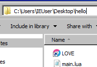
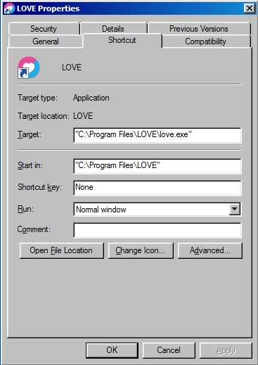

Up and running
Learning by making is fun and effective. Learning to interface with other people's software is part of being a programmer and is a necessary skill to have as one. LÖVE is a framework for making games. A framework is just a set of tools or functionality combined together to serve a larger purpose. In the case of LÖVE this includes, but is not limited to:
- Functions for loading images, audio, and text
- Functions for creating and moving objects
- Parameters for making the objects interact
Installing your development environment
The LÖVE website has links to install the software on your system. If you have LÖVE installed already, make sure that you at least version 11 (mysterious mysteries) as some functionality we'll cover here doesn't exist in older versions. For mobile devices you can find a copy in the app store. Along with installing LÖVE, you will need a text editor for creating Lua files on your system. I'm not going to make any recommendations for that as you can easily search the web for "code editors" and find any number of suitable choices for your operating system.
Test that LÖVE runs
When you launch LÖVE, (see instructions below on how to do that) you will be greeted with a friendly graphic and the text "NO GAME", meaning you are running the engine but didn't give it a game to load.
OSX and other posix systems
If your system created a shortcut, run that. Otherwise you can open the terminal on your system and run the command:
love
Windows
If a shortcut for LÖVE didn't appear in the start menu, you should be able to type "love" in the search and see it.
Create a project folder
Find a safe place to create a folder and give it the name "hello". Within the folder, create a new text file named "main.lua". This will be where our game's code goes.
Note for Windows: In order to create a file with the name "main.lua", you may need to first create a new "Text Document", right-click on it, click "Properties" then from the properties menu change the file extension from reading "main.lua.txt" to just "main.lua".
Create a test game
Within "main.lua", write out the following function:
love.draw = function()
love.graphics.print('Hello World!', 400, 300)
end
Now let's figure out how to run it and see what it does.
Run the game
This will be different for different operating systems.
OSX and other posix systems
Open the terminal and navigate to the "hello" folder:
cd /path/to/your/game
ls # Should display "main.lua" if you're in the correct directory.
This will let LÖVE know the game is in this folder. Now run LÖVE:
love .
The . (period) means "current location", so you're telling LÖVE that the game is in this location we're currently in.
If the game ran successfully, you will see a black window with the text "Hello world!" in small print.
Windows
Find the shortcut to LÖVE and drag and drop it in the game folder like so:

Then right-click on the LÖVE shortcut and you will see a "Properties" dialog window similar to this:

The "Target" field may be the same or slightly different depending on your system version. Without deleting the text string currently in the "Target" field, append the path to your game folder in quotes to the end. You can copy and paste this path from the folder's address bar. For instance the target path in the picture should go from reading:
"C:\Program Files\LOVE\love.exe"
to
"C:\Program Files\LOVE\love.exe" "C:\Users\IEUser\Desktop\hello"
Now press "OK" to close the Properties dialog and clicking the shortcut will launch the game. If the game ran successfully, you will see a black window with the text "Hello world!" in small print.
Congratulations!
You've set up your development environment for writing a game in Lua. If you had issues getting through this, reach out to me either through a GitHub issue or my contact information and I will update this guide to including any additional troubleshooting steps for future users.
Now that our development environment is set up and our first game is running, try modifying the code so the string "Hello World!" reads something different. It's pretty apparent that running this function prints to the screen whatever string we give it. But what are the 2nd and 3rd parameters for?
love.graphics.print('Hello World!', 400, 300)
Try modifying those numbers and see what it does to the text.